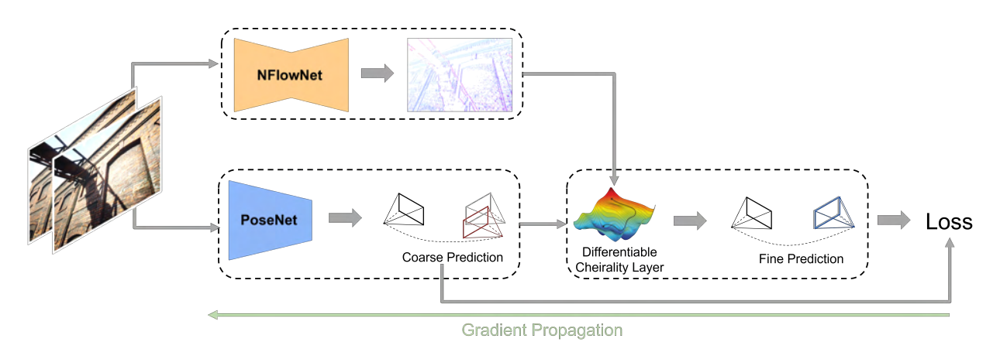

TTCDist
Distance estimation from vision is fundamental for a myriad of robotic applications such as navigation, manipulation and planning. Inspired by the mammal's visual system, which gazes at specific objects, we develop two novel constraints involving time-to-contact, acceleration, and distance that we call the tau-constraint and Phi-constraint which allow an active (moving) camera to estimate depth efficiently and accurately while using only a small portion of the image.
We successfully validate the proposed constraints with two experiments. The first applies both constraints in a trajectory estimation task with a monocular camera and an Inertial Measurement Unit (IMU). Our methods achieve 30-70% less average trajectory error, while running 25x and 6.2x faster than the popular Visual-Inertial Odometry methods VINS-Mono and ROVIO respectively. The second experiment demonstrates that when the constraints are used for feedback with efference copies the resulting closed loop system's eigenvalues are invariant to scaling of the applied control signal. We believe these results indicate the tau and Phi constraint's potential as the basis of robust and efficient algorithms for a multitude of robotic applications.
References
ICRA 2023
Levi Burner, Nitin J. Sanket, Cornelia Fermuller, Yiannis Aloimonos, IEEE International Conference on Robotics and Automation (ICRA), 2023.

DiffPoseNet
Current deep neural network approaches for camera pose estimation rely on scene structure for 3D motion estimation, but this decreases the robustness and thereby makes cross-dataset generalization difficult. In contrast, classical approaches to structure from motion estimate 3D motion utilizing optical flow and then compute depth. Their accuracy, however, depends strongly on the quality of the optical flow. To avoid this issue, direct methods have been proposed, which separate 3D motion from depth estimation but compute 3D motion using only image gradients in the form of normal flow. In this paper, we introduce a network NFlowNet, for normal flow estimation which is used to enforce robust and direct constraints. In particular, normal flow is used to estimate relative camera pose based on the cheirality (depth positivity) constraint. We achieve this by formulating the optimization problem as a differentiable cheirality layer, which allows for end-to-end learning of camera pose. We perform extensive qualitative and quantitative evaluation of the proposed DiffPoseNet's sensitivity to noise and its generalization across datasets. We compare our approach to existing state-of-the-art methods on KITTI, TartanAir, and TUM-RGBD datasets.
References
CVPR 2022
Chethan M. Parameshwara, Gokul Hari, Cornelia Fermuller, Nitin J. Sanket, Yiannis Aloimonos, IEEE/CVF Conference on Computer Vision and Pattern Recognition (CVPR), 2022.

PRGFlow
Odometry on aerial robots has to be of low latency and high robustness whilst also respecting the Size, Weight, Area and Power (SWAP) constraints as demanded by the size of the robot. A combination of visual sensors coupled with Inertial Measurement Units (IMUs) has proven to be the best combination to obtain robust and low latency odometry on resource-constrained aerial robots. Recently, deep learning approaches for Visual Inertial fusion have gained momentum due to their high accuracy and robustness. However, the remarkable advantages of these techniques are their inherent scalability (adaptation to different sized aerial robots) and unification (same method works on different sized aerial robots) by utilizing compression methods and hardware acceleration, which have been lacking from previous approaches. To this end, we present a deep learning approach for visual translation estimation and loosely fuse it with an Inertial sensor for full 6 DoF odometry estimation. We also present a detailed benchmark comparing different architectures, loss functions and compression methods to enable scalability. We evaluate our network on the MSCOCO dataset and evaluate the VI fusion on multiple real-flight trajectories.
References
Electronic Letters 2021
Nitin J. Sanket, Chahat Deep Singh, Cornelia Fermuller, Yiannis Aloimonos, Electronics Letters, 2021.
SalientDSO
Although cluttered indoor scenes have a lot of useful high-level semantic information which can be used for mapping and localization, most Visual Odometry (VO) algorithms rely on the usage of geometric features such as points, lines and planes. Lately, driven by this idea, the joint optimization of semantic labels and obtaining odometry has gained popularity in the robotics community. The joint optimization is good for accurate results but is generally very slow. At the same time, in the vision community, direct and sparse approaches for VO have stricken the right balance between speed and accuracy. We merge the successes of these two communities and present a way to incorporate semantic information in the form of visual saliency to Direct Sparse Odometry - a highly successful direct sparse VO algorithm. We also present a framework to filter the visual saliency based on scene parsing. Our framework, SalientDSO, relies on the widely successful deep learning based approaches for visual saliency and scene parsing which drives the feature selection for obtaining highly-accurate and robust VO even in the presence of as few as 40 point features per frame. We provide extensive quantitative evaluation of SalientDSO on the ICL-NUIM and TUM monoVO datasets and show that we outperform DSO and ORB-SLAM - two very popular state-of-the-art approaches in the literature. We also collect and publicly release a CVL-UMD dataset which contains two indoor cluttered sequences on which we show qualitative evaluations. To our knowledge this is the first paper to use visual saliency and scene parsing to drive the feature selection in direct VO.
References
T-ASE 2019
Nitin J. Sanket*, Huai-Jen Liang*, Cornelia Fermuller, Yiannis Aloimonos, IEEE Transactions on Automation Science and Engineering, 2019.
* Equal Contribution
Awarded the Brin Family Prize, 2018. News Article


 Perception and Autonomous Robotics Group
Perception and Autonomous Robotics Group